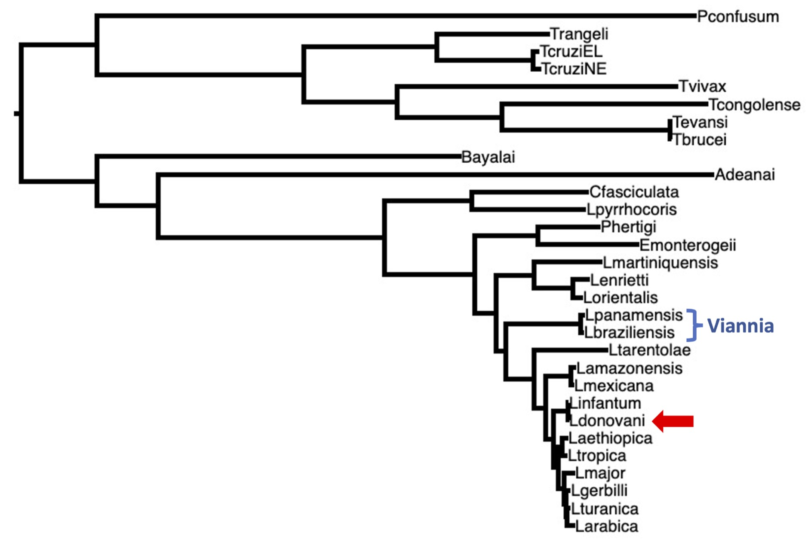
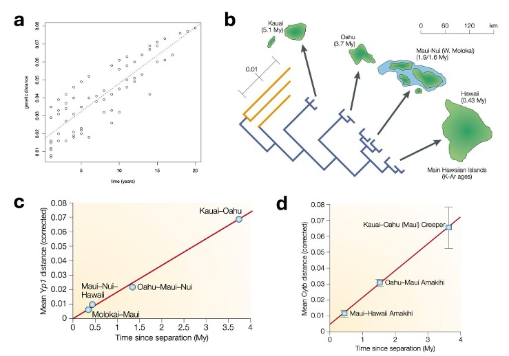
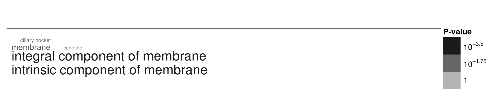
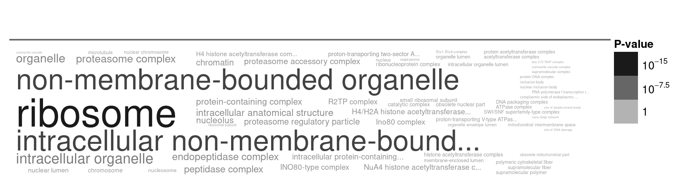

[1] "vacuolar-type Ca2+-ATPase, putative (fragment)"
[2] "Acyl CoA binding protein, putative"
[3] "NUDIX hydrolase dihydroneopterin triphosphate pyrophosphohydrolase/hydrolase, putative"
[4] "RNA-binding protein, putative"
[5] "c2 domain protein, putative"
[6] "methionyl-tRNA formyltransferase, putative"
[7] "pyroglutamyl-peptidase I, putative"
[8] "Ssl1-like, putative"
[9] "DnaJ domain containing protein, putative"
[10] "serine/threonine phosphatase, putative" BIO00056I
Workshop 7: Comparative Genomics
1 Learning objectives
- Learn more about interpreting comparative genomics data
- Learn about gene conservation over deep time (billions of years)
- To observe an example of the principle that diversity within species gives rise to the divergence between species
2 Introduction
Today, we examine whether we can observe consistent patterns of evolutionary rates across time scales.
2.1 The molecular clock
In the last workshop, we saw how several species of Leishmania parasites that can be found in the Amazon rainforest and other areas of South America were genetically different from each other. These species were all relatively closely related.
In this workshop, we continue looking at Leishmania data, but the observations we make will apply to any group of species.
This time, we look at how more distantly-related Leishmania species. We know from the molecular clock concept, that if two species are dissimilar genetically, this is because mutations have accumulated over time. Figure 2 below shows that the molecular clock also holds over very long periods of time.
 Figure 1. Evidence that molecular clock causes divergence between species over both short and long periods of time. Panel a: We saw from the influenza virus workshop that mutations occurred within influenza viruses at a regular rate with time over merely a few decades. Panel b: This also occurs over long periods of time. For example, geologists know that the Pacific islands of Hawaii have been formed over millions of years, emerging one after the other over the last 5 million years. Evolutionary biologists know that both honeycreeper birds and Drosophila fruit flies have populated these islands during this time, and from the geological data, we know how long ago they diverged. If we look at genetic data from the Yp1 gene in honeycreepers (Panel c) and the Cytb gene from fruit flies (Panel d), we observe a very consistent correlation between genetic distance (vertical axis) and time between island formation (horizontal axis). Just like the data you saw from the influenza virus, it looks very much like there is a constant rate of genetic divergence with time, this time over millions of years. Plots b-d are from Bromham and Penny, 2003.
Figure 1. Evidence that molecular clock causes divergence between species over both short and long periods of time. Panel a: We saw from the influenza virus workshop that mutations occurred within influenza viruses at a regular rate with time over merely a few decades. Panel b: This also occurs over long periods of time. For example, geologists know that the Pacific islands of Hawaii have been formed over millions of years, emerging one after the other over the last 5 million years. Evolutionary biologists know that both honeycreeper birds and Drosophila fruit flies have populated these islands during this time, and from the geological data, we know how long ago they diverged. If we look at genetic data from the Yp1 gene in honeycreepers (Panel c) and the Cytb gene from fruit flies (Panel d), we observe a very consistent correlation between genetic distance (vertical axis) and time between island formation (horizontal axis). Just like the data you saw from the influenza virus, it looks very much like there is a constant rate of genetic divergence with time, this time over millions of years. Plots b-d are from Bromham and Penny, 2003.
2.2 Evolutionary change over deep time
We told you in the lectures that:
- The accumulation of mutations within species generates the genetic differences between species
- The different kinds of genes have different evolutionary rates, for example:
- In a single-celled organism, proteins that are located on the outside of the cells tend to evolve relatively rapidly, to adapt to the external environment
- Proteins that are located deep on the insides of the cells, performing fundamental processes (like DNA replication), tend to change slowly because they are so important
Are there consistent patterns of evolution within and between species?
- The accumulation of mutations within species generates the genetic differences between species
- Therefore, we might expect that the genes that evolve evolve rapidly within species would also evolve rapidly between species
- And the genes that change slowly within species should also change slowly between species.
Today, we will examine these predictions
3 Exercises
3.1 The phylogeny
This time, compare within species gene diversity of Leishmania donovani, then between species gene divergence between Leishmania donovani, and Leishmania braziliensis, and finally between species gene divergence with yeast. Figure 2 below shows a phylogenetic tree of Leishmania and related species.

Figure 2. A phylogenetic tree of Leishmania and related species. Two of species that we looked at last time in the Viannia clade are included (blue brackets). Today, we will study genetic differences within the L. donovani species (red arrow). We will also look at genetic differences between species, by comparing L. braziliensis to L. donovani. We will also compare L. donovani proteins to a yeast species that diverged from Leishmania over a billion years ago (but yeast is not shown on this tree).
3.2 Genetic distances: shallow and deep time
Today, we will examine patterns of evolutionary change over three time scales, as summarised in Table 1 below. Our aim is to examine whether the same kinds genes tend to evolve rapidly or slowly over all these time scales.
| Time scale | Years (approximate) | Data comparison |
|---|---|---|
| Shallow time | thousands | genetic differences within L. donovani |
| Intermediate | millions | genetic differences between L. donovani and L. braziliensis |
| Deep time | billions | protein differences between L. donovani and yeast |
Note: These times scales are very approximate, but we certainly know that the within-species differences are much more recent than the between-species differences, and that the yeast divergence is much older still.
3.2.1 Synonymous and non-synonymous mutations
The SNPs we downloaded were classified as either:
- synonymous: mutations that do not change the protein’s amino acid sequence. Sometimes these are called silent mutations.
- non-synonymous: mutations that do change the protein sequence.
We expect the synonymous mutations to be more or less neutral (ie: not subject to selection), because they don’t change the protein, so we can think of these as representing what occurs without selection, like a control.
The non-synonymous mutations that do change the protein, will often be subject to selection. Since most new mutations are harmful, we expect that many non-synonymous mutations will be removed by purifying selection. Very occasionally, a non-synonymous mutation will be beneficial, and will be favoured by positive selection.
To understand selection within a gene, we can calculate ratio of non-synonymous (selection) / synonymous (control) ratio. We will call this the N/S ratio. I show some toy examples of N/S ratios in Table 2 below.
NB: More complex analyses call this ratio the dN/dS ratio, or the Ka/Ks ratio.
| Gene | synonymous SNPs | non-synonymous SNPs | Interpretation |
|---|---|---|---|
| A | 1 | 10 | far fewer non-synonymous than synonymous SNPs: purifying selection has removed many non-synonymous SNPs |
| B | 10 | 11 | non-synonymous and synonymous SNPs about the same: no selection |
| C | 20 | 10 | more non-synonymous than synonymous SNPs: positive selection has selected for non-synonymous SNPs |
Interpreting the N/S ratios
Gene A: The N/S ratio is very low (N=1, S=10, N/S = 0.1). Since we observe many fewer non-synonymous (amino-acid changing) SNPs than synonymous SNPs strong purifying selection has probably been acting on this gene.
Gene B: The N/S ratio is near to 1 (N=10, S=11, N/S = 0.9). Since we observe the same number of non-synonymous (amino-acid changing) SNPs as synonymous SNPs it is likely that no selection has been acting on this gene.
Gene C: The N/S ratio is high (N=20, S=10, N/S = 2). Since we observe more non-synonymous (amino-acid changing) SNPs than synonymous SNPs strong positive selection has probably been acting on this gene
NB: These are toy examples. We would seldom observe such extreme N/S values in real data.
3.3 Shallow time: N/S ratios
First, let’s look at Figure 3, which shows the distribution of N/S ratios within L. donovani genes.

Figure 3. The distribution of N/S ratios within L. donovani genes. We can see that most genes have N/S ratios less than 1 (left of the red dashed line), indicating that purifying selection is acting on most genes.
Discussion points: N/S ratios in L. donovani genes
- Most genes have N/S ratios less than 1 (left of the red dashed line). What does this indicate?
- A few genes have N/S ratios greater than 1 (right of the red dashed line). What does this indicate?
- In total, there are
57886synonymous SNPs. We can assume that these are not subject to strong selection. In contrast, there are48460non-synonymous SNPs. So we have 83% as many non-synonymous SNPs as synonymous SNPs. Where did the other 17% of non-synonymous SNPs go?
3.4 Shallow time: what kinds of genes have high or low N/S ratios?
If a gene has a low N/S ratio, this indicates that it is subject to strong purifying selection. If a gene has a high N/S ratio, this indicates that it is subject to positive selection.
To understand what kinds of genes have high or low N/S ratios, I divided the genes into 2 groups:
- High N/S ratio genes, with N/S ratio > 1.3, that might be subject to positive selection
- Low N/S ratio genes: with N/S ratio < 0.15, that are probably subject to purifying selection
Note: I say might be, because N/S ratios can be noisy, and positive selection can be quite difficult to prove.
There are 1714, genes with N/S ratio > 1.3. Here is a list of those with the highest N/S ratios - it doesn’t tell us much does it!
To explain what kinds of genes have high N/S ratios, we can use a technique called gene ontology (GO) enrichment analysis.
gene ontology (GO)
- Gene Ontology (GO) is a system for classifying genes according to their biochemical functions, the biological processes they are involved in, and the cellular locations that the proteins operate in (eg: nucleus, membrane, etc).
- If we have a gene list, we can use GO enrichment analysis to look for patterns in the kinds of genes that are present in the list.
3.4.1 Shallow time: gene enrichment analysis
I ran a gene enrichment analysis, looking for enrichment in the cellular locations of the high N/S ratio genes, that might be subject to positive selection. I also ran an enrichment analysis on the low N/S ratio genes, that are subject to strong purifying selection. The results are shown in Figure 4 (positive selection) and Figure 5 (purifying selection) below.
 Figure 4. A word cloud showing the cellular locations enriched in positive selection genes. I selected genes with high N/S ratios (> 1.3), and ran the gene enrichment analysis using TriTrypDB. Larger words indicate greater enrichment, and the grey text intensity indicates the statistical significance of the enrichment (darker = more significant, paler = less significant).
 Figure 5. A word cloud showing the cellular locations enriched in genes that are subject to strong purifying selection. I selected genes with low N/S ratios (< 0.15), and ran the gene enrichment analysis using TriTrypDB. Larger words indicate greater enrichment, and the grey text intensity indicates the statistical significance of the enrichment (darker = more significant, paler = less significant).
Figure 5. A word cloud showing the cellular locations enriched in genes that are subject to strong purifying selection. I selected genes with low N/S ratios (< 0.15), and ran the gene enrichment analysis using TriTrypDB. Larger words indicate greater enrichment, and the grey text intensity indicates the statistical significance of the enrichment (darker = more significant, paler = less significant).
Discussion points: gene enrichment analysis
- Where do positive selection proteins localise (Figure 4)?
- Where do slowly evolving proteins localise (Figure 5)?
- In the same way that the MK test example showed us that different sites within proteins are subject to different types of selection, what patterns do you observe here?
3.5 Deep time analysis
Since diversity within species gives rise to divergence between species, we might expect that the genes that evolve rapidly within species would also evolve rapidly between species over long periods of time. We’ll examine this now.
To study this, we will now compare how similar the proteins are between L. donovani and L. braziliensis. You can see that these are quite distant on the phylogenetic tree (Figure 2). We don’t know exactly how long ago they diverged, but it will be much longer ago that the within-species differences we saw earlier, so perhaps 100,000 years or even millions of years ago.
To compare the proteins between these two species, I calculated the percent identity of each L. donovani and L. braziliensis ortholog (ie: what percent of amino acids in the alignment are the same). The percent identities range from 22% to 100%. What is remarkable here is that some proteins have changed an enormous amount over this time, while others have not changed at all, showing that over evolutionary time, genes change at different rates.
Of the ~8,000 orthologous proteins I selected the most rapidly evolving 1500 genes (lowest percent identity) and the most slowly evolving 1500 genes (highest percent identity), and ran gene enrichment analyses on both sets of genes.
3.5.1 Deep time analysis: first look at the results
Let’s look at the most slowly evolving genes first. Here is a list of the most conserved, slowly evolving genes (with the highest percent identity):
[1] "calmodulin, putative"
[2] "calmodulin, putative"
[3] "40S ribosomal protein S5 (fragment)"
[4] "40S ribosomal protein S15A, putative"
[5] "60S ribosomal protein L34, putative (fragment)"
[6] "ATG8/AUT7/APG8/PAZ2, putative"
[7] "60S ribosomal protein L37a, putative"
[8] "40S ribosomal protein S8, putative (fragment)"
[9] "40S ribosomal protein S15A, putative"
[10] "60S ribosomal protein L13, putative (fragment)"This time, there is certainly a pattern!
And now here’s the list of the most rapidly evolving genes (with the lowest percent identity):
[1] "Present in the outer mitochondrial membrane proteome 22-1"
[2] "receptor-type adenylate cyclase a (fragment)"
[3] "glutathionylspermidine synthase, putative"
[4] "receptor-type adenylate cyclase, putative (fragment)"
[5] "polyprenyl synthase, putative"
[6] "ubiquitin-activating enzyme, putative"
[7] "helicase-like protein"
[8] "Wee1-like protein kinase, putative"
[9] "mitochondrial chaperone, putative (fragment)"
[10] "RNA recognition motif. (a.k.a. RRM, RBD, or RNP domain), putative"I am not such a ‘Leishmaniac’ that I can see a pattern here, but do you notice anything that reminds me of the shallow time results?
3.5.2 Deep time analysis: GO enrichment analysis
To understand these large lists of genes, I again ran gene enrichment analyses on both the most slowly evolving genes (highest percent identity) and the most rapidly evolving genes (lowest percent identity). The results are shown in Figure 6 (slowly evolving genes) and Figure 7 (rapidly evolving genes) below.

Figure 6. A word cloud showing the cellular locations enriched in slowly evolving genes. I selected genes with high percent identity (most slowly evolving), and ran the gene enrichment analysis using TriTrypDB. Larger words indicate greater enrichment, and the grey text intensity indicates the statistical significance of the enrichment (darker = more significant, paler = less significant).
 Figure 7. A word cloud showing the cellular locations enriched in rapidly evolving genes. I selected genes with low percent identity (most rapidly evolving), and ran the gene enrichment analysis using TriTrypDB. Larger words indicate greater enrichment, and the grey text intensity indicates the statistical significance of the enrichment (darker = more significant, paler = less significant).
Figure 7. A word cloud showing the cellular locations enriched in rapidly evolving genes. I selected genes with low percent identity (most rapidly evolving), and ran the gene enrichment analysis using TriTrypDB. Larger words indicate greater enrichment, and the grey text intensity indicates the statistical significance of the enrichment (darker = more significant, paler = less significant).
3.6 Deep time analysis: discussion points
Discussion points: deep time gene enrichment analysis
- Consider what kinds of genes are slowly evolving (Figure 6) and rapidly evolving (Figure 7).
- Is this consistent with what we saw in the shallow time analysis?
- We used slightly different methods (N/S ratios vs percent identity), and different species comparisons (L. donovani within-species vs L. donovani vs L. braziliensis between-species).
- Yet we see similar patterns. What does this tell us about the processes of selection that operate within species (L. donovani) and between species?
- Are rates of change higher for proteins the insides of cells, or the outsides of cells? Why might this be?
3.7 Very deep time analysis
So far we have looked at genetic differences within L. donovani (shallow time) and between L. donovani and L. braziliensis (deep time). Now we will compare Leishmania proteins to the fission yeast Schizosaccharomyces pombe, which diverged from Leishmania a very long time ago, perhaps a billion years ago.
Again, I calculated the percent identity of each L. donovani and S. pombe ortholog (ie: what percent of amino acids in the alignment are the same).
This time, we will only look at the conserved, slowly evolving proteins, because the rapidly evolving proteins have changed so much that we cannot identify orthologs between these very distantly-related species. The top 150 conserved proteins (with the highest percent identity) are between 58% and 83% identical between L. donovani and S. pombe.
 Figure 8. A word cloud showing the cellular locations enriched in very slowly evolving genes. I selected genes with high percent identity (most slowly evolving), and ran the gene enrichment analysis using TriTrypDB. Larger words indicate greater enrichment, and the grey text intensity indicates the statistical significance of the enrichment (darker = more significant, paler = less significant).
Here there is one very clear outline: the ribosome.
3.8 Final discussion points
Discussion points
We observe a fairly consistent pattern across all time scales that we have examined: genes that are located on the outsides of cells tend to evolve rapidly, while genes that are located deep within cells tend to evolve slowly. of course, there are exceptions, and the rates of protein change are affected by many other factors, but this general pattern is very clear. Let’s consider this.
- Why do you think that ribosomal proteins are so highly conserved over such long periods of time (Figure 8)?
- Given the function of ribosomes in the cell, what might be the consequences of a mutation that reduced protein translation accuracy by 0.1%?
- Why do you think that proteins located on the outsides of cells tend to evolve rapidly?
For those that are curious the genes lists that I used for this analysis are here. You’ll need to be signed in with your University of York Google account to access it.
4 Summary
Today, we examined the patterns of evolutionary change within and between species. We observed that:
- Different kinds of genes evolve at different rates, both within species and between species
- These patterns are consistent over both short time scales (within species) and long time scales
- Genes that are located on the outsides of cells tend to evolve rapidly, while genes that are located deep within cells tend to evolve slowly
That is the end for today.
5 After the workshop: exam style questions
Question 1. If the rate of mutation is the same for all genes in a genome, and we compare two very closely related species, we should observe the same numbers of mutations in each gene. Is this correct?
In your answer, explain:
- If we do see the same numbers of mutations in each gene, or not
- What genetic and evolutionary factors might cause us to not observe the same numbers of mutations in each gene
Hint: consider both stochastic factors (randomness) and biological processes of evolutionary change.
Question 2. Given what you know about the fitness effects of mutations, which population genetic process would we expect to have the main impact on differences in evolutionary rates between genes?
In your answer, explain:
- What the main population genetic process is
- Why this results in differences in evolutionary rates between genes
- How we could test this hypothesis using genetic data from within and between species